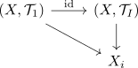

Initialtopologie als gröbste Topologie für die Stetigkeit der Abbildungen
Satz
Sei $X$ eine Menge und $(X_i, \mathcal{T}_i)$ eine Familie von topologischer Räumen mit jeweils einer Abbildung $f_i: X \rightarrow X_i$ Dann ist die Initialtopologie $(X, \mathcal{T}_I)$ die gröbste Topologie, so dass die Familie $f_i$ jeweils stetig ist
Beweis
Sei $\mathcal{T}'$ eine Topologie auf $X$, so dass $f_i': (X, \mathcal{T}') \rightarrow X_i$ mit $f_i(x) = f_i'(x)$ jeweils stetig ist. Dann lässt sich $f_i'$ auf folgende Weise Faktorisieren.

Nach Universeller Eigenschaft gilt, dass $\mathrm{id}$ stetig ist, da $f_i'$ stetig ist. Somit folgt aus der Aussage über die Feinere Topologie und Identitätsabbildung, dass $\mathcal{T}_I \subseteq \mathcal{T}'$, d.h. $\mathcal{T}_I$ ist gröber